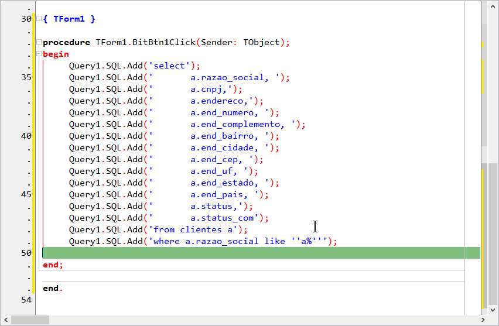

Muitos ficam tanto tempo com uma IDE que não se importam mais em saber as novidades que ela possui a cada versão nova. Isso é um erro porque ao descobrir uma novidade, se pergunta "por que não a conhecí antes?".
Essa é a impressão causada em alguns quando descobrem a função Multi Paste. Afinal, para quê ela serve?
Muitas vezes procuramos na IDE a função chamada de column mode ou search/replace porque "colamos"(Ctrl+V) textos e desejamos depois acrescentar algo a direito e/ou a esqueda dele. O Multi paste é um jeito superior para resolver este tipo de situação, eu gosto de chamá-lo de um "colar" personalizado porque pode personalizá-lo antes do resultado final.
Vamos a um exemplo melhor, imagine que você tenha a seguinte query na sua área de clipboard:
Você quer usar a query acima no seu programa, e em Object Pascal precisará adaptá-lo deixando-o assim:
Usando o column mode e/ou search/replace voce acrescentaria
Query1.SQL.Add(' à esquerda e
'); à direita
e depois limparia espaços em branco e aspas duplas, estou certo?
Mas o Multi paste resolve de maneira mais prática a resolução do problema, veja como:
Note que você consegue ter um preview de como ficará o "colar" personalizado

Seu código/query já está com aspas corretamente fechando seus pares.
Ainda ficou com duvida? Assista ao vídeo:
>O exemplo acima foi com query, mas pense em qualquer tipo de código que precise copiar e colar e depois, personalizá-lo para ser util dentro de componentes que lidem com códigos advindo de outras áreas como HTML, XML, JSON... enfim que você precise transportar para dentro de um componente ou concatená-lo mais tarde. Veja essa concatenação:
A utilidade desse Multi paste é bastante ampla, aproveite bastante o recurso.